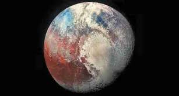

|

PLÜTON
Plüton, Güneş’e en uzak bilinen gökcisimlerinden biridir ve uzun yıllar boyunca Güneş Sistemi’nin dokuzuncu gezegeni olarak kabul edilmiştir.
Ancak 2006 yılında Uluslararası Astronomi Birliği (IAU) tarafından yapılan tanımla, “gezegen” statüsünden çıkarılmış ve “cüce gezegen” sınıfına alınmıştır.
Bu kararın nedeni, Plüton’un yörüngesini diğer gökcisimlerinden tam olarak temizleyememesi ve klasik gezegen tanımına uymamasıdır.
Plüton, Neptün’ün ötesindeki Kuiper Kuşağı adı verilen bölgede yer alır. Bu bölge, buz ve kaya karışımından oluşan küçük gökcisimleriyle doludur.
Plüton’un çapı yaklaşık 2.376 kilometredir; bu, Dünya’nın uydusu Ay’dan bile küçüktür. Küçük olmasına rağmen oldukça yoğun bir yapıya sahiptir.
Bileşimi kaya ve donmuş gazlardan oluşur.
Gezegenin yüzeyi buzla kaplıdır ve bu buzlar metan, su ve azottan oluşur. Yüzeyinde açık ve koyu bölgeler bulunur; bazı bölgeler kırmızımsı renktedir,
bu da kimyasal reaksiyonlar sonucu oluşan organik bileşiklerden kaynaklanır. Plüton’un atmosferi çok incedir ve büyük oranda azot içerir; ayrıca az
miktarda metan ve karbon monoksit de bulunur. Güneş’e yaklaştığında atmosferi genişler, uzaklaştığında ise donar ve yüzeye çöker.
Plüton’un beş uydusu vardır. En büyüğü Charon, Plüton’un kendisine neredeyse eşit büyüklüktedir. Bu nedenle bazı bilim insanları Plüton–Charon ikilisini
bir “çift gezegen sistemi” olarak da tanımlar. Diğer uyduları Nix, Hydra, Kerberos ve Styx’tir.
Plüton’un Güneş etrafındaki yörüngesi oldukça eliptiktir (oval). Güneş’e olan uzaklığı zamanla değişir; bazen Neptün’den bile daha yakın hale gelir.
Bir Plüton yılı, yani Güneş etrafında bir tam dönüşü tamamlaması yaklaşık 248 Dünya yılı sürer.
2015 yılında NASA’nın New Horizons uzay aracı, Plüton’a en yakın uçuşu gerçekleştirmiş ve gezegenin yüzeyine dair ilk net görüntüleri Dünya’ya göndermiştir.
Bu keşif, Plüton’un yüzeyinde dağlar, buz ovaları ve donmuş akıntılar bulunduğunu ortaya koymuştur.
Sonuç olarak Plüton, küçük boyutuna rağmen oldukça karmaşık bir yapıya sahip, hâlâ birçok gizem barındıran bir cüce gezegendir. Güneş Sistemi’nin
sınırlarında sessizce dolanan bu buzlu dünya, evrenin oluşum süreci ve gezegenlerin çeşitliliği hakkında bilim dünyasına önemli bilgiler sunmaktadır.
|